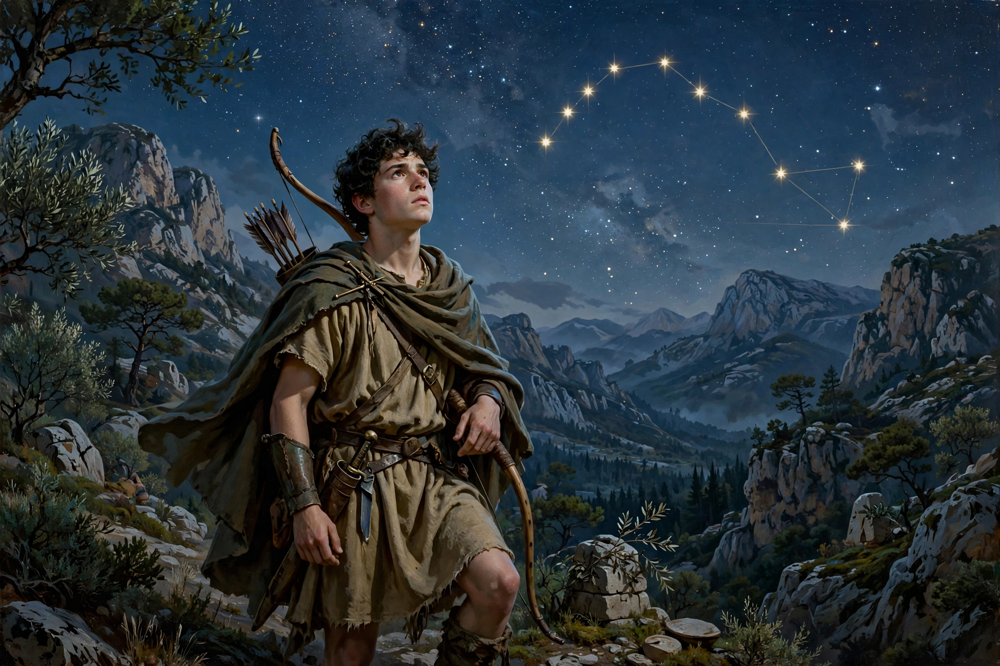

In Greek mythology, Arcas (Ancient Greek: Ἀρκάς) was a hunter who became king of Arcadia. He was remembered as the eponymous ancestor of the Arcadians and, together with his mother Callisto, was associated with the constellations Ursa Major and Ursa Minor. His name is connected with the Greek word arktos, "bear."

Arcas was the son of Zeus and Callisto, a nymph and follower of Artemis. Callisto was transformed into a bear — in most versions by a jealous Hera, or by Artemis as punishment — and Arcas was raised by others (variously by Hermes, by the god's instruction to Maia, or by his grandfather Lycaon). Grown into a hunter, Arcas nearly killed his mother in bear form while hunting; Zeus intervened and placed both in the sky, Callisto as Ursa Major and Arcas as the constellation Boötes (or, in another version, as Ursa Minor; he is also identified with the star Arcturus, "bear-guardian").
As king, Arcas succeeded Nyctimus and is credited with introducing agriculture to Arcadia, teaching his people to cultivate grain — a gift he had learned from Triptolemus — and to bake bread, weave, and make clothing from wool. He divided the land among his three sons, Azan, Apheidas, and Elatus, giving his name to the country formerly called Pelasgia. The city of Trapezus was said to hold his tomb, and his bones were later transferred to Mantineia on the instruction of the Delphic oracle.